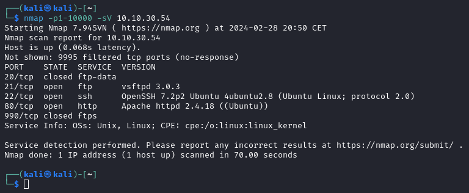

nmap
Utilització
Usage: nmap [Scan Type(s)] [Options] {target specification}
Paràmetres Comuns
-T<0-5>:Configura la velocitat d'escaneig (Més alt més ràpid).-sV:Detecció dels banners dels serveis.-O:Habilita la detecció d'OS.-oN/-oX/-oG <file>:Sortida, Normal, XML, Grepable.-sn:Ping only, retorna MAC i temps de ping, si està encès.-Pn:Tracta tots els hosts com online, se saltarà el check inicial de ping.--script=:Permet usar scripts, vegeu.
Scripts
banner: Llista la informació del banner TCP.cups-info: Intentarà recollir informació d'impressores gestionades per CUPS.dhcp-discover: Enviarà un paquet DHCPINFORM per recollir la informació donada per un servidor DHCP sense agarrar una adreça.dns-brute: Fa un brute force per intentar llistar els hostnames d'un servidor DNS amb subdominis comuns.dns-fuzz: Atac de fuzzing contra un servei DNS.docker-version: Intenta recollir la versió de docker.ftp-anon: Intenta un login anonymous a un servidor FTP.ftp-brute: Atac de força bruta contra FTP.http-csrf: Reporta si hi ha alguna vulnerabilitat Cross Site Request Forgeries (CSRF).http-enum: Enumeració de directoris en servidor HTTP.http-passwd: Comprova si el servidor web és vulnerable a directory traversal intentant printar el contingut de/etc/passwdo\boot.ini.http-robots.txt: Comprova els elements bloquejats d'un servidor web del fitxer/robots.txtldap-search: Intenta fer un search en un servei ldap.mikrotik-routeros-brute: Intenta fer un atac de força bruta en el servei d'autenticació Mikrotikmysql-databases: Intenta llistar les BDs d'un servei MySQL.mysql-users: Intenta llistar els usuaris d'un servei MySQL.nfs-showmount: Intenta llistar els directoris compartits per un servidor NFS.smb-server-stats: Intenta llistar les estadístiques d'un servidor a través del servei SMB pels ports 445 o 139.vulners: Comprova vulnerabilitats, les mostra i el seu CVSS score.
També podem utilitzar múltiples scripts de la mateixa categoria, per exemple '--script=http*' executarà tots els scripts que comencin amb el nom http
Exemples d'ús:
- Escaneig dels ports 1 al 1000, amb detecció de banner de servei:

- Escaneig dels ports comúns, amb detecció de SO i versió, scripts i traceroute.